#1 · DELLUSDT09-03 20:20 → 09-03 20:35
60m +1.81%
確認收盤 487.83 站上時 MA7 485.716 > MA14 485.054 > MA25 484.896 從 MA200 下站上後三根還在上面 484.885（+0.61%） 1h 487.83 > MA99 462.562 / MA200 463.001
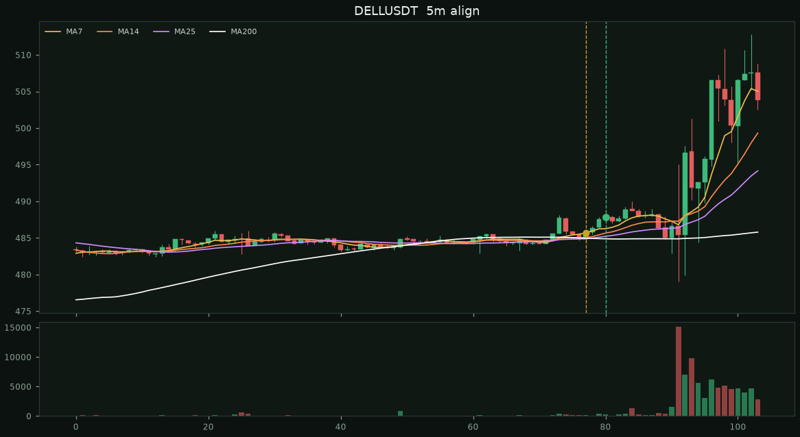
流動 USDT 永續 233 檔。 5m MA7>MA14>MA25，從 MA200 下站上後連續三根都收在上面， 確認根還要 7>14>25>200。同時 1h 在 MA99 / MA200 上。同標的 4 小時內不重發。 報酬從確認根收盤算到之後 15/30/60/120 分鐘，不是進出場建議。
漏斗：從下站上且多排 1105 → 連續三根站穩且確認根 7>14>25>200 37 → 小時過濾 19 → 同標的 4 小時冷卻 19 · 讀檔失敗 0
15m 勝率 31.6% 均 -0.10% · 30m 42.1% 均 -0.49% · 60m 52.6% 均 -0.17% · 120m 55.6% 均 +0.01%
下圖累積的是各筆 60 分鐘報酬相加，不是組合複利。圖卡只放 60m 最好/最差各一部分。
確認收盤 487.83 站上時 MA7 485.716 > MA14 485.054 > MA25 484.896 從 MA200 下站上後三根還在上面 484.885（+0.61%） 1h 487.83 > MA99 462.562 / MA200 463.001

確認收盤 1.375 站上時 MA7 1.37286 > MA14 1.37129 > MA25 1.37036 從 MA200 下站上後三根還在上面 1.37116（+0.28%） 1h 1.375 > MA99 1.35127 / MA200 1.36191
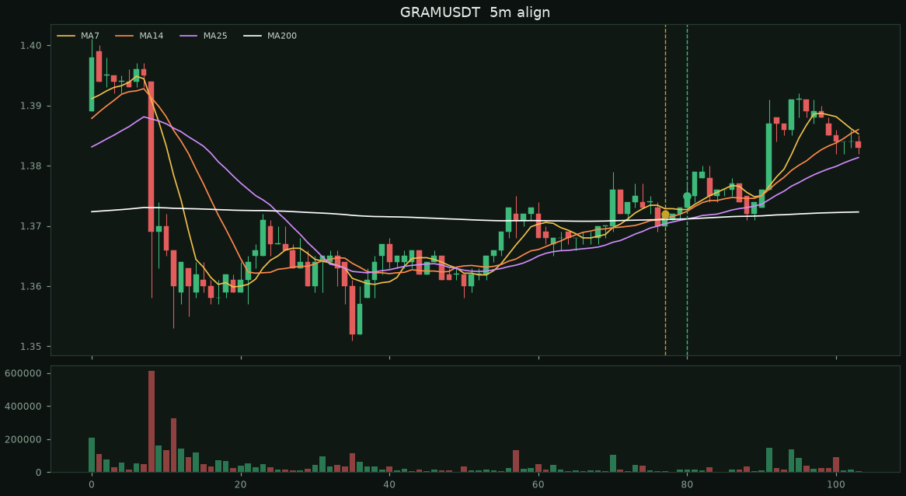
確認收盤 0.0849 站上時 MA7 0.0846071 > MA14 0.0846043 > MA25 0.0846008 從 MA200 下站上後三根還在上面 0.0846148（+0.34%） 1h 0.0849 > MA99 0.0838734 / MA200 0.0843286
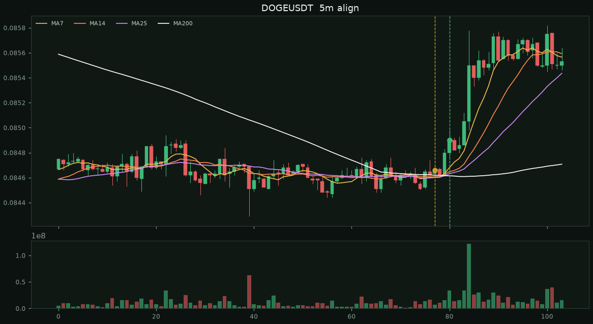
確認收盤 0.0798 站上時 MA7 0.08192 > MA14 0.0807293 > MA25 0.0803608 從 MA200 下站上後三根還在上面 0.0794665（+0.42%） 1h 0.0798 > MA99 0.0778189 / MA200 0.075134
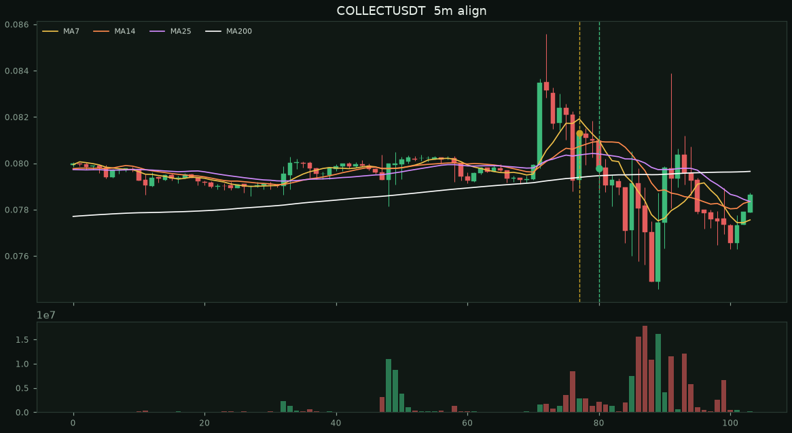
確認收盤 0.07066 站上時 MA7 0.0695229 > MA14 0.0695207 > MA25 0.0694784 從 MA200 下站上後三根還在上面 0.0694571（+1.73%） 1h 0.07066 > MA99 0.0690886 / MA200 0.0691773
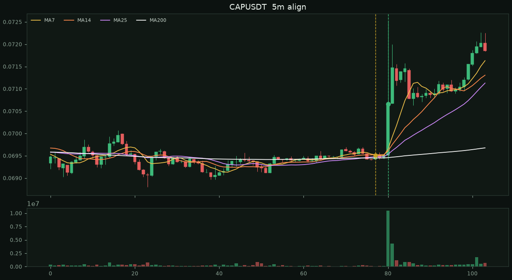
確認收盤 0.05507 站上時 MA7 0.0549514 > MA14 0.054935 > MA25 0.0549196 從 MA200 下站上後三根還在上面 0.0548073（+0.48%） 1h 0.05507 > MA99 0.0475708 / MA200 0.0439445
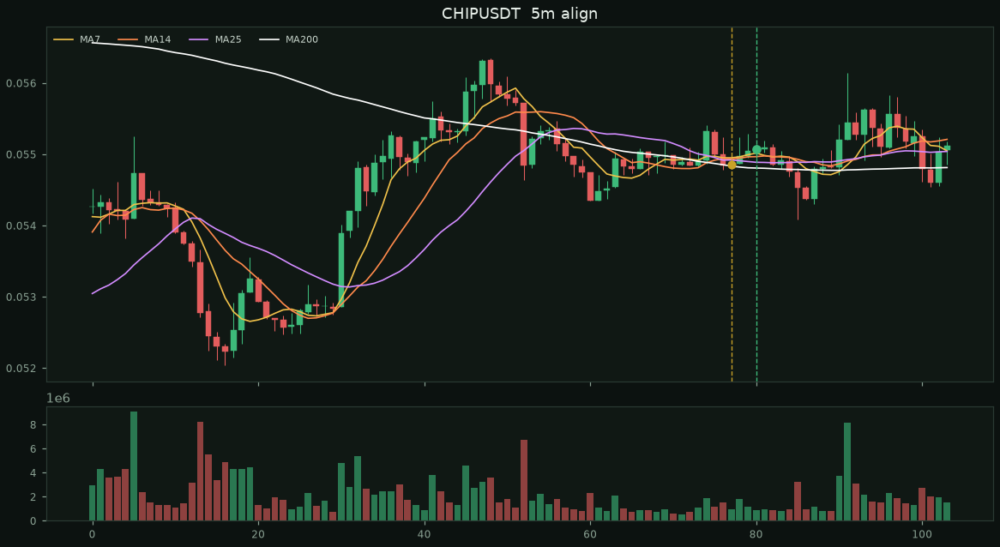
確認收盤 0.04897 站上時 MA7 0.0487014 > MA14 0.0486607 > MA25 0.0484292 從 MA200 下站上後三根還在上面 0.048514（+0.94%） 1h 0.04897 > MA99 0.0461999 / MA200 0.0463045
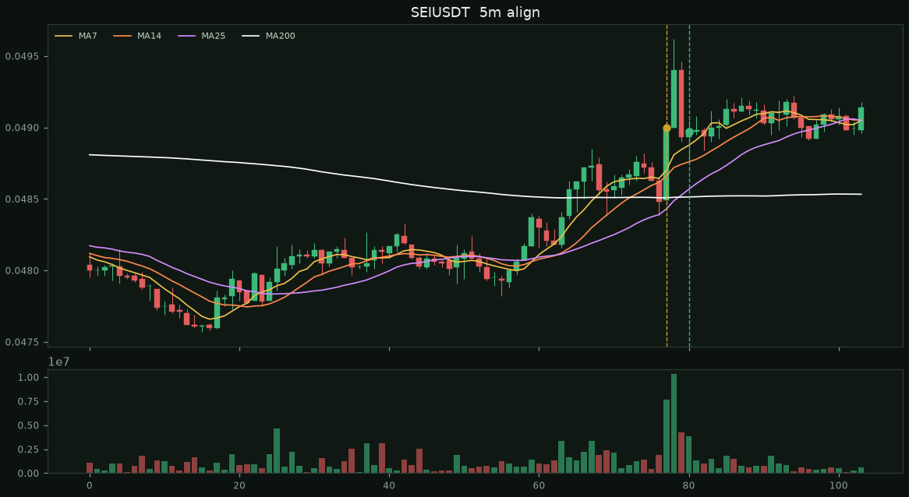
確認收盤 1375.83 站上時 MA7 1373.66 > MA14 1373 > MA25 1372.3 從 MA200 下站上後三根還在上面 1372.13（+0.27%） 1h 1375.83 > MA99 1283.02 / MA200 1240.48
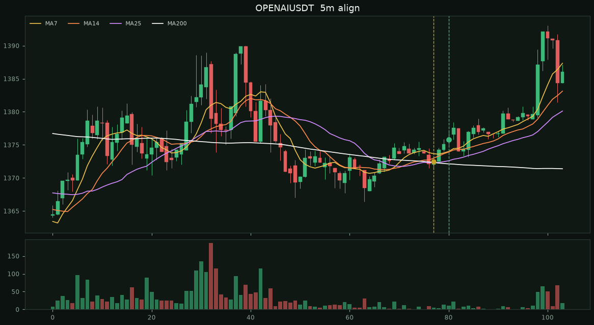
確認收盤 614.13 站上時 MA7 614.021 > MA14 613.749 > MA25 613.688 從 MA200 下站上後三根還在上面 613.698（+0.07%） 1h 614.13 > MA99 588.795 / MA200 582.823
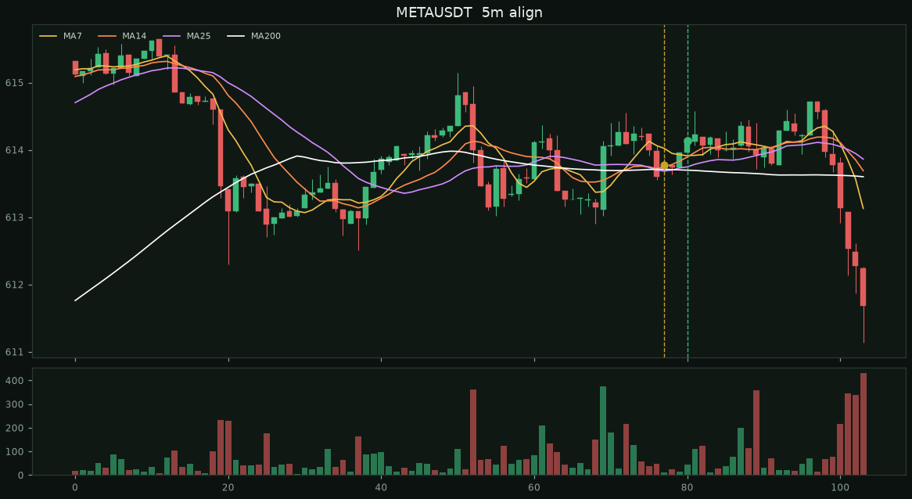
確認收盤 0.5405 站上時 MA7 0.539 > MA14 0.538279 > MA25 0.537532 從 MA200 下站上後三根還在上面 0.537622（+0.54%） 1h 0.5405 > MA99 0.50664 / MA200 0.481491
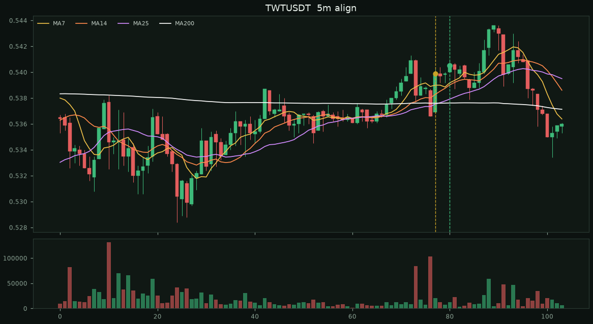
確認收盤 101.79 站上時 MA7 101.566 > MA14 101.539 > MA25 101.515 從 MA200 下站上後三根還在上面 101.537（+0.25%） 1h 101.79 > MA99 94.854 / MA200 92.2499
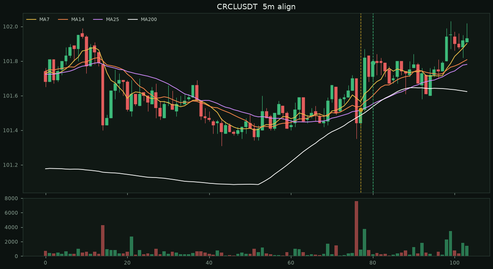
確認收盤 251.69 站上時 MA7 251.576 > MA14 251.551 > MA25 251.547 從 MA200 下站上後三根還在上面 251.52（+0.07%） 1h 251.69 > MA99 240.581 / MA200 241.165
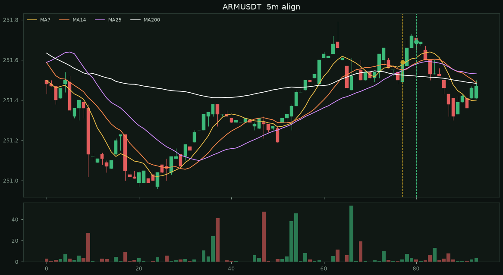
確認收盤 6.31 站上時 MA7 6.24386 > MA14 6.22364 > MA25 6.19448 從 MA200 下站上後三根還在上面 6.20494（+1.69%） 1h 6.31 > MA99 5.98944 / MA200 5.39533
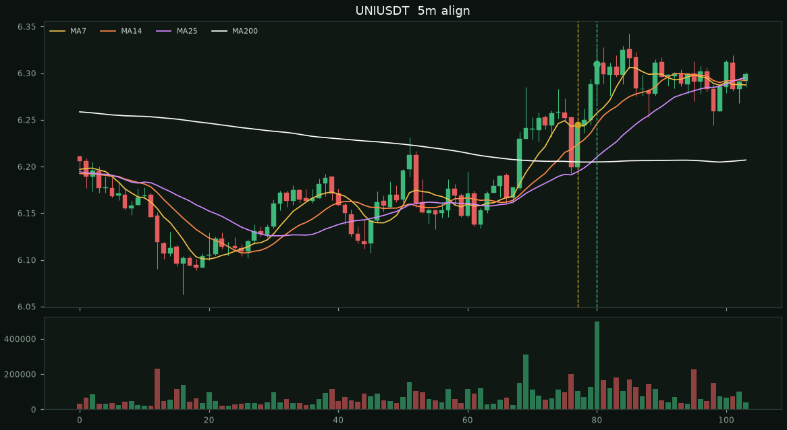
確認收盤 0.45436 站上時 MA7 0.45168 > MA14 0.451391 > MA25 0.451027 從 MA200 下站上後三根還在上面 0.451114（+0.72%） 1h 0.45436 > MA99 0.440414 / MA200 0.4241
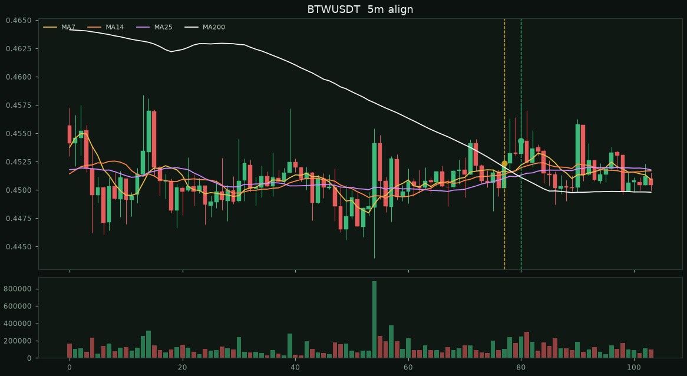
確認收盤 0.0286 站上時 MA7 0.0283914 > MA14 0.0283579 > MA25 0.0282532 從 MA200 下站上後三根還在上面 0.0276197（+3.55%） 1h 0.0286 > MA99 0.0228417 / MA200 0.0219538
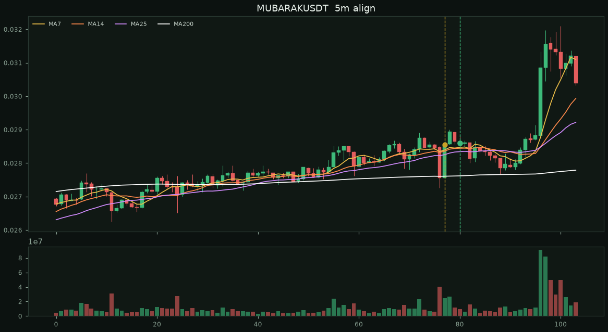
確認收盤 0.745 站上時 MA7 0.741 > MA14 0.740857 > MA25 0.740488 從 MA200 下站上後三根還在上面 0.738205（+0.92%） 1h 0.745 > MA99 0.71746 / MA200 0.707783
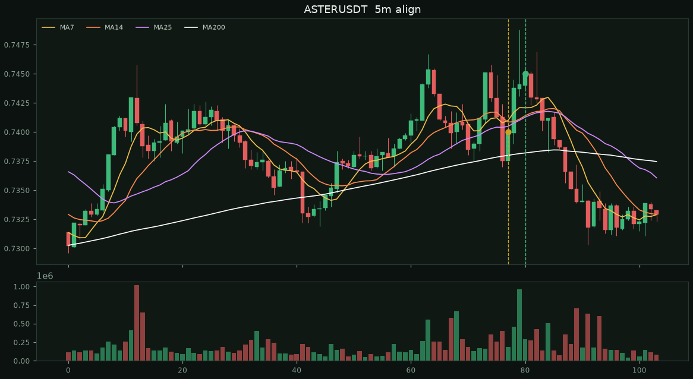
確認收盤 0.02089 站上時 MA7 0.0200943 > MA14 0.0200479 > MA25 0.0200224 從 MA200 下站上後三根還在上面 0.0200833（+4.02%） 1h 0.02089 > MA99 0.0202535 / MA200 0.0196154
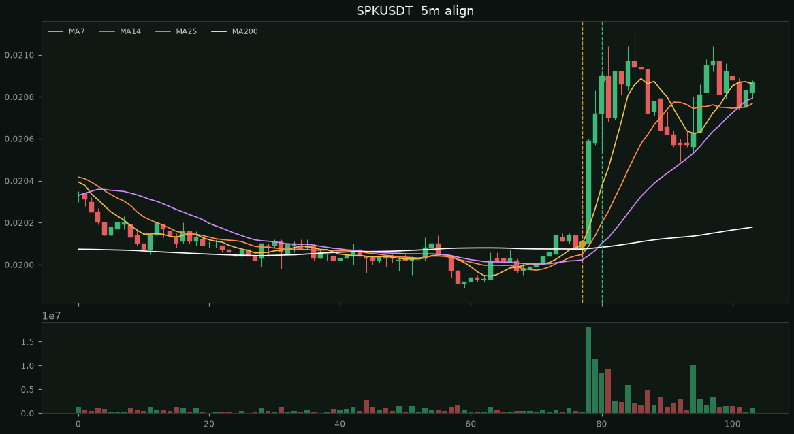
確認收盤 0.15085 站上時 MA7 0.132113 > MA14 0.130106 > MA25 0.129178 從 MA200 下站上後三根還在上面 0.131415（+14.79%） 1h 0.15085 > MA99 0.135984 / MA200 0.138827
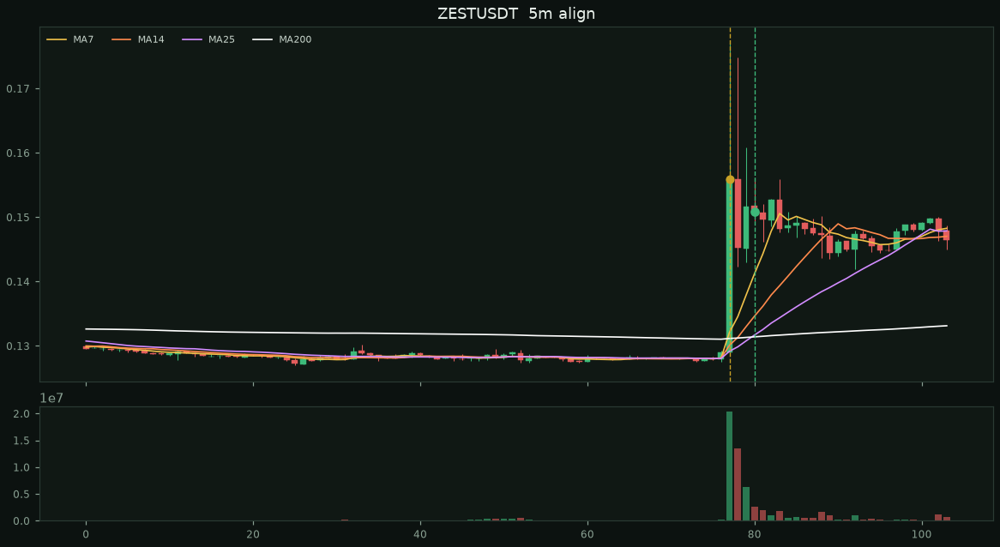
確認收盤 0.18093 站上時 MA7 0.17314 > MA14 0.173022 > MA25 0.172203 從 MA200 下站上後三根還在上面 0.172556（+4.85%） 1h 0.18093 > MA99 0.140727 / MA200 0.119628
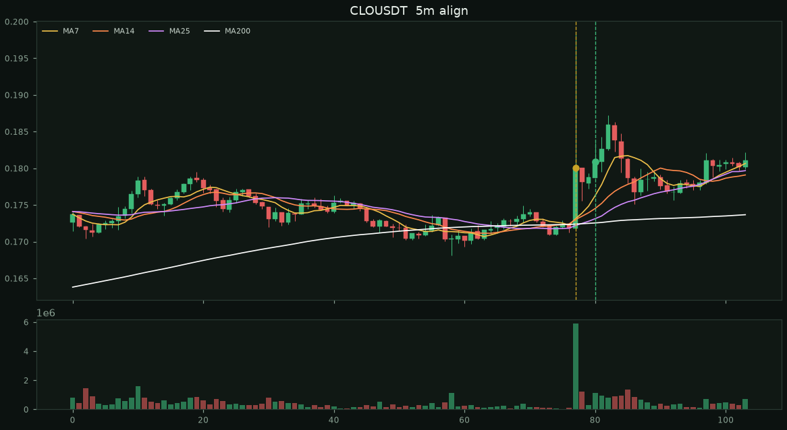
| # | 標的 | 時間 | 15m | 30m | 60m | 120m |
|---|---|---|---|---|---|---|
| 1 | TWTUSDT | 09-03 04:35 | -0.17% | -0.07% | +0.02% | -0.76% |
| 2 | CAPUSDT | 09-03 05:40 | +1.03% | +0.35% | +0.62% | +1.92% |
| 3 | CLOUSDT | 09-03 05:55 | +1.59% | -2.30% | -2.30% | -0.44% |
| 4 | ZESTUSDT | 09-03 17:25 | -1.80% | -1.74% | -2.29% | -3.84% |
| 5 | COLLECTUSDT | 09-03 19:45 | -1.03% | -2.19% | +0.71% | -2.22% |
| 6 | DELLUSDT | 09-03 20:35 | +0.21% | +0.06% | +1.81% | +3.24% |
| 7 | MUBARAKUSDT | 09-03 21:15 | -0.45% | -1.33% | -0.70% | +1.96% |
| 8 | SEIUSDT | 09-04 00:05 | +0.06% | +0.29% | +0.27% | +0.43% |
| 9 | METAUSDT | 09-04 18:20 | +0.01% | -0.02% | +0.03% | -0.31% |
| 10 | BTWUSDT | 09-04 22:40 | -0.20% | -0.92% | -0.38% | -0.73% |
| 11 | GRAMUSDT | 09-05 02:30 | +0.00% | +0.15% | +0.87% | +0.73% |
| 12 | OPENAIUSDT | 09-05 04:00 | -0.11% | +0.08% | +0.22% | +0.79% |
| 13 | CHIPUSDT | 09-05 07:10 | -0.29% | -1.27% | +0.38% | +0.40% |
| 14 | ASTERUSDT | 09-05 09:05 | -0.54% | -0.85% | -1.48% | -1.76% |
| 15 | UNIUSDT | 09-05 11:30 | -0.19% | -0.41% | -0.16% | +0.19% |
| 16 | DOGEUSDT | 09-05 14:15 | +0.18% | +0.75% | +0.80% | +0.93% |
| 17 | CRCLUSDT | 09-05 15:25 | -0.05% | +0.01% | -0.06% | +0.11% |
| 18 | SPKUSDT | 09-05 17:25 | -0.14% | +0.19% | -1.53% | -0.38% |
| 19 | ARMUSDT | 09-05 21:15 | -0.06% | -0.09% | -0.09% | — |